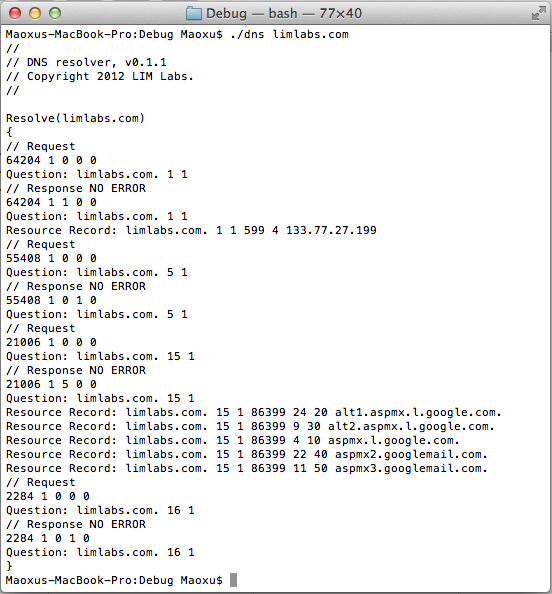

DNS Parser
There is no doubt, DNS (Domain Name System) is one of the most important infrastructure of the Internet. The most basic (but also most important) function of DNS is establishing associations between domain names and host addresses (IP addresses). DNS is one of the most widely used services on Internet. However, we rarely need to program directly on DNS protocol. TCP/IP stack (and other Internet protocol stacks) usually inherently works with domain name as well as IP address. The examples include function gethostbyname() in IPv4 stack and the counter-part of getaddrinfo() in IPv6 stack. Given a domain name, return associated IP addresses. We need not to know the details of DNS protocol. But... Yes, there are still cases that need programming directly on DNS protocol, usually for network troubleshooting or educational purpose, like command line tool Dig. This project built a simple library used to parse DNS packets.
The library is coding in C++ and in a style of object-orientation. It supports parsing DNS request and response message, as well as the resource records carried in response message. Some basic knowledge about DNS protocol can be found in this blog post.
Demo Program
A demo program is implemented to demonstrate the usage of the library. It runs with a given argument of target domain name. It connects to a DNS server and retrieve all kinds of resource records for the domain name as is shown in below screen shot. You may find a copy of the source code at Github.
